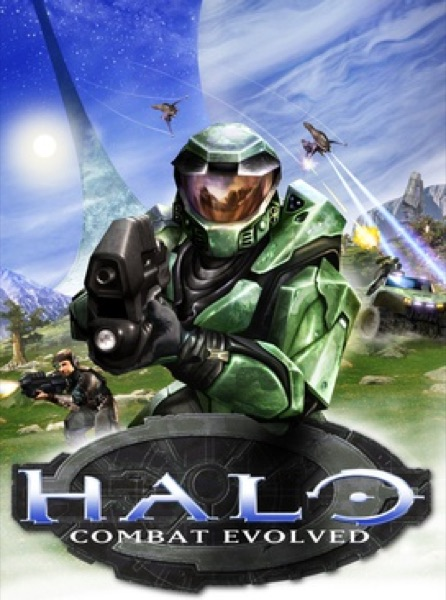

Shooter · 2001
Halo: Combat Evolved
Proved a console shooter could feel better than a mouse, with two guns and a grenade.

Cover: Wikipedia: Halo: Combat Evolved
Facts
- Released
- 2001-11-15
- Genre
- FPS
- Category
- Shooter
- Platforms
- PC, Xbox
- Developers
- Bungie, Gearbox Software
- Publishers
- Xbox Game Studios